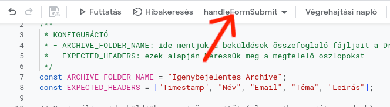

A kód nem rövid, (ezt itt alább éppen a chatGPT írta nekem) de azért csak nézd át. Sosem árt,
ha az ember legalább nagyjából tudja mit futtat az adatain ;). Végül is épp azért dolgoztunk ennyit, hogy el tudd olvasni.
(Ha esetleg valamelyik rész mégsem lenne világos, akkor a fenti célokkal együtt másold
be a kedvenc LLM modelledbe és kérdezd meg miért pont úgy csinálta).
3.3. Segédfüggvények
Végül tegyünk még hozzá néhány segédfüggvényt (olvasás, validáció, írás, email, archiválás).
persze beleírhatta volna az "AI" ezt is a triggerbe, de nem tette és jó okkal.
Ha mindent oda halmoztunk volna, nemigen tudnád végigolvasni. Így viszont
az logikailag szétválasztható funkcionalitás külön függvényben van
és el tudod dönteni, hogy jó-e, ezt szeretted volna-e vagy sem.
Figyeld meg, hogy a függvények neve végére egy aláhúzásjelet rakott.
Ez nem kötelező (inkább tradíció) és azt szokták vele jelölni,
hogy ezek a függvények nem "globális" függvények (egyébként
a függvényeid bárhonnan hívhatók), hanem csak ennek a scriptnek
a segédfüggvényei, és nem akarjuk sehol máshol használni őket,
mint a "fő" trigger függvényben.
Az Apps Script ismeri a tradíciót és fent a futtatandó függvények
listájában nem is fogja mutatni őket!

Mit gondolsz, mit csinál a senConfirmation_ függvény? (Na jó, ez nem túl fogós.) No és az ensureColumn_?